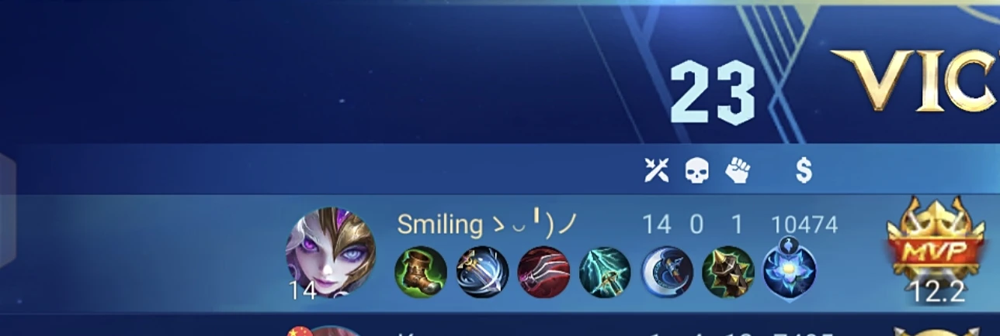
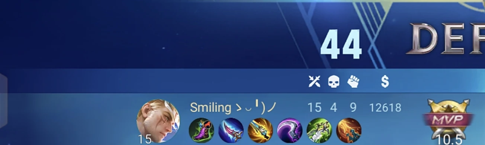
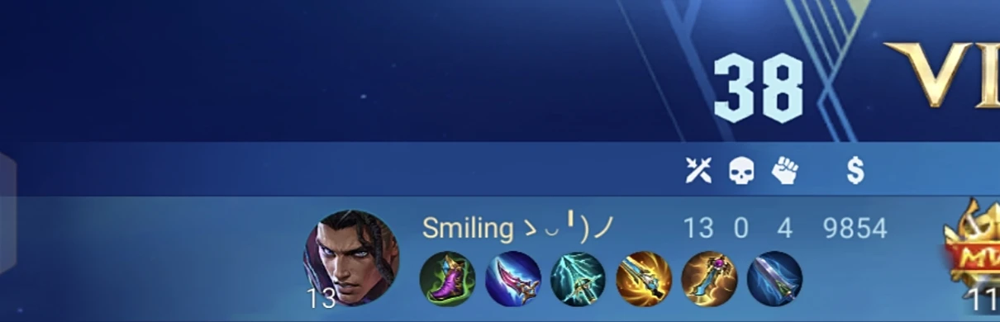
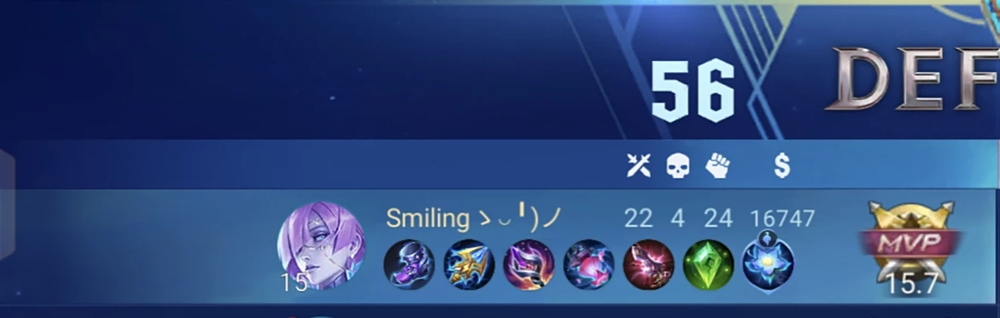
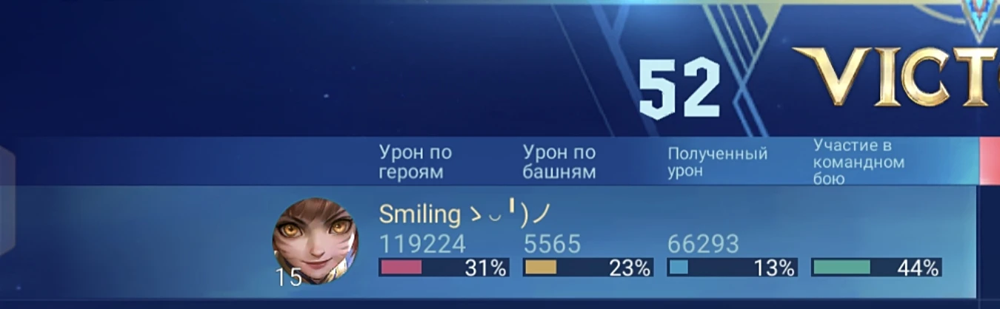
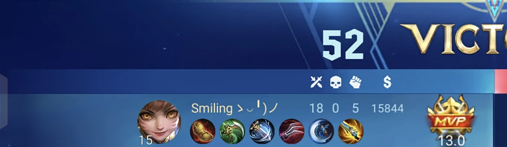

Здравствуйте, команда Team Spirit! Меня зовут [Твоё имя], я играю в Mobile Legends: Bang Bang и сейчас нахожусь на ранге Gold. Понимаю, что это не топ-уровень, но для меня Gold — это не потолок, а этап, на котором я системно прокачиваю ключевые навыки: чтение карты, тайминги, контроль объектов и работу в команде. За последнее время я выстроил для себя чёткий цикл улучшения: после каждого матча разбираю ошибки (что пошло не по плану, где потерял темп, как можно было сыграть иначе), смотрю реплеи сильных игроков на своей позиции и отрабатываю конкретные механики в тренировочном режиме. Такой подход уже дал стабильный рост рейтинга и более уверенную игру в критических моментах. Я умею держать темп в ранней и средней стадии, не теряюсь при смене вектора атаки и стараюсь не оставлять союзников без поддержки. В команде я ориентирован на результат: если нужно взять «неудобного» героя под пик врага — беру и отрабатываю роль. Для меня важно не просто набить статистику, а выиграть матч. Мне очень хочется быть частью профессиональной среды, где можно учиться у сильных игроков и расти вместе с командой. Готов выполнять любые задачи от тренерского штаба: разбирать пики и контры, вести заметки по соперникам, тренировать связки и строго следовать плану подготовки. Прилагаю ссылки на свой профиль и несколько реплеев с матчами, где я играл на ключевой позиции и принимал важные решения. Также могу прислать статистику за последние 30–50 игр и разбор одного из матчей по запросу. Буду рад любой обратной связи и возможности показать себя на тестовых играх.





